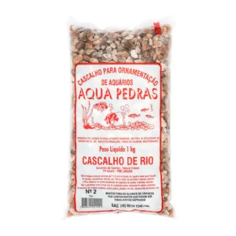

ItaPets - Detalhes do Produto
Voltar para a Página Inicial
Substrato para Aquários

Preço
R$ 65,90
Marca
Aqua Pedras
Material
Cascalho de Quartzo natural com PH Neutro
Peso
1kg
Recomendação
Após enxágue colocar camada de 1 à 5 cm no fundo do aquário